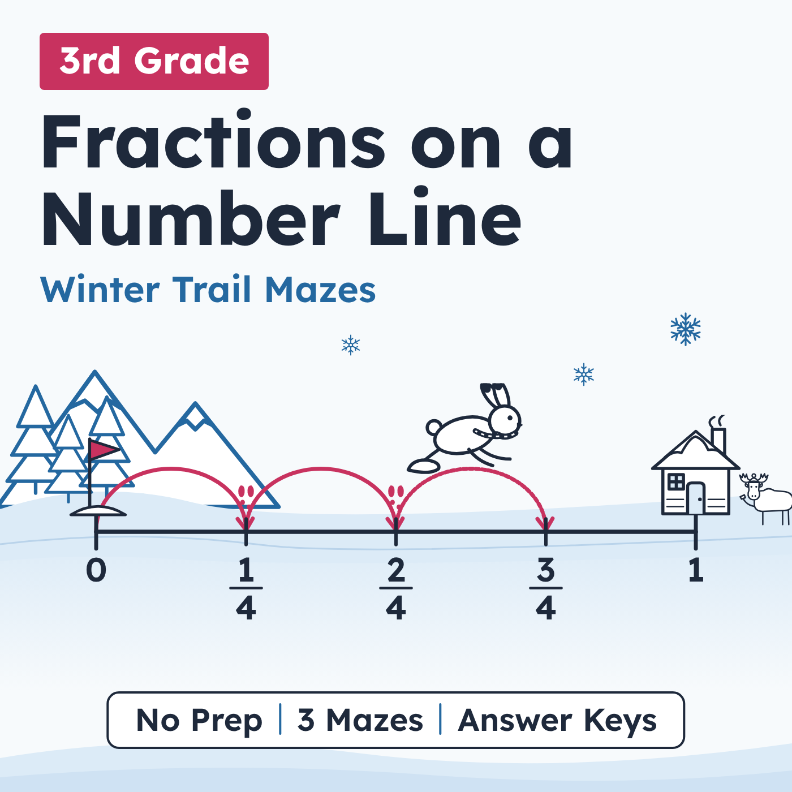
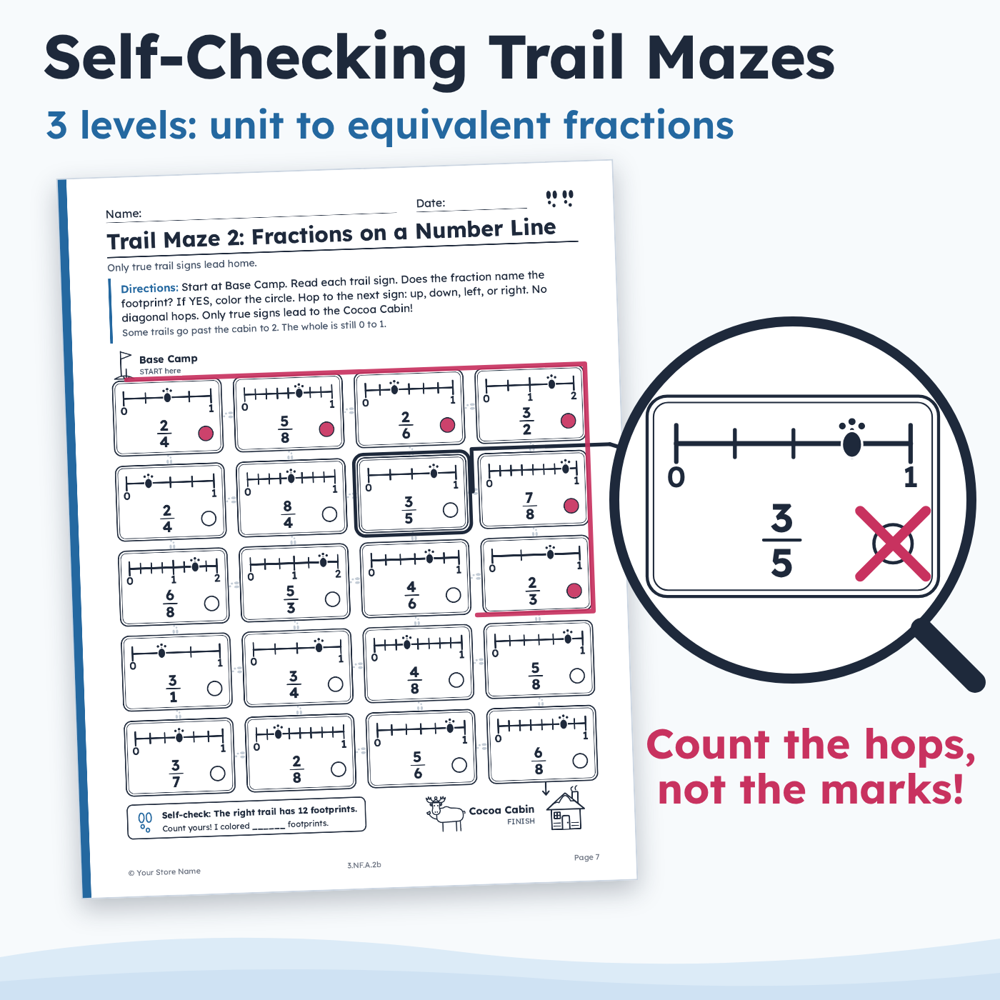
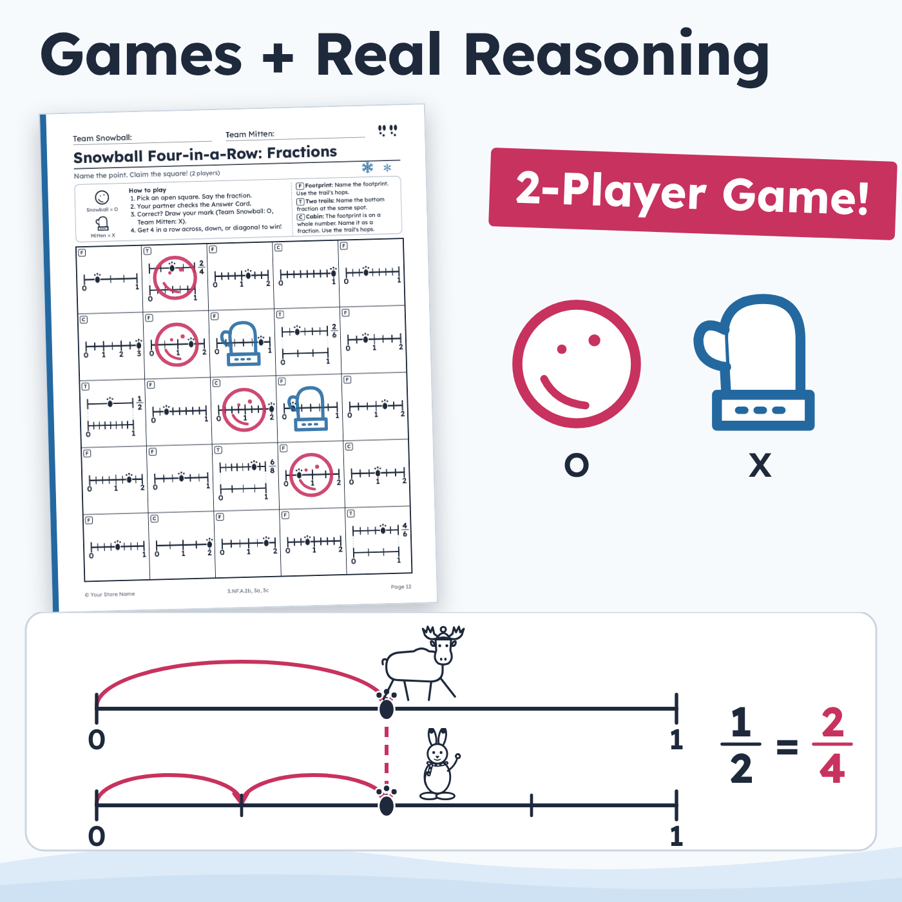
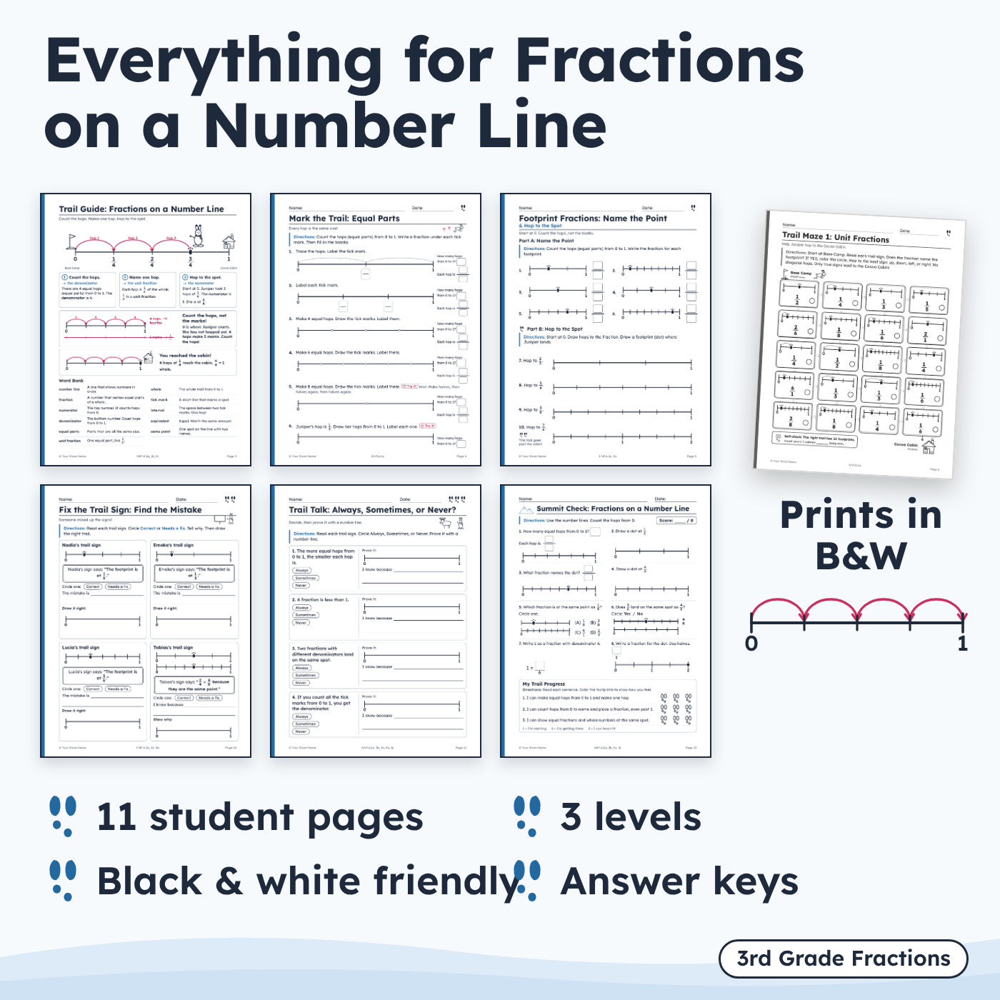
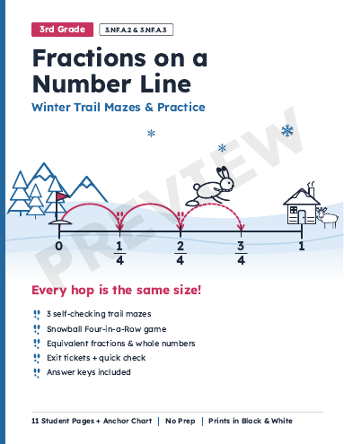
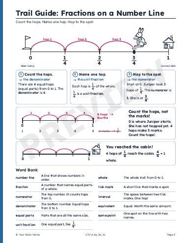
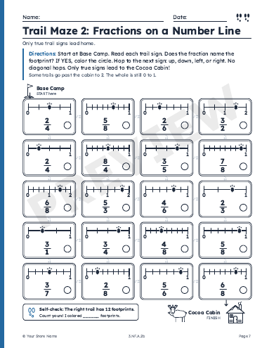
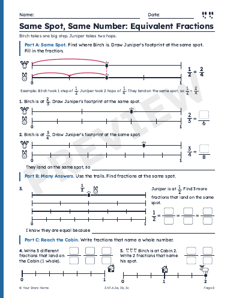
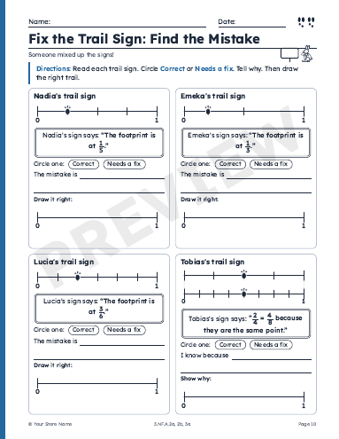
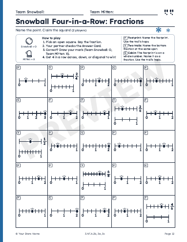

Do your 3rd graders count the tick marks instead of the equal parts? This winter math set teaches fractions on a number line with one simple routine: count the hops, name one hop, and hop to the spot. Juniper the snowshoe hare hops from Base Camp (0) to the Cocoa Cabin (1), and every hop on a trail is the same size. Students partition number lines, name and place unit fractions and fractions a/b (including fractions greater than 1), and find equivalent fractions and whole numbers that land on the same point. It all comes in one 18-page printable PDF with 3 self-checking mazes, a 2-player game, and answer keys.
The theme is plain winter (snow, pine trees, snowshoes, and hot cocoa) with no holiday content, so it fits a January or February fractions unit.
No prep for the practice pages: just print. Only two things need cutting: the exit tickets (4 per page) and the Game Answer Card (one per pair of players). Student pages print in black and white.
Teacher Guide & What's Inside: the 3-step Trail Routine, what the paw-print levels mean, a suggested 6-day path, teaching tips, and a page-by-page table of standards and answer key pages
Trail Guide anchor chart: the routine with a worked example in fourths, a "Count the hops, not the marks!" box, and a word bank (number line, numerator, denominator, unit fraction, tick mark, interval, equivalent, and more)
11 student pages (listed below)
Answer keys (3 pages) for every student page
Standards, Terms of Use & Credits
Mark the Trail: Equal Parts (6 items: split 0 to 1 into 2, 3, 4, 6, or 8 equal parts and name one part)
Footprint Fractions: Name the Point (10 items: name the point, then hop to the spot, including one point on a 0 to 2 line)
Trail Maze 1: Unit Fractions (20 trail signs; the right path has 10 footprints)
Trail Maze 2: fractions a/b, including a few greater than 1 (20 trail signs; the right path has 12 footprints)
Same Spot, Same Number: Equivalent Fractions (stacked number lines, a worked example, and 5 items, including whole numbers written as fractions)
Trail Maze 3: Same Spot or Whole Number? (20 trail signs; the right path has 10 footprints)
Fix the Trail Sign: Find the Mistake (4 error-analysis cards; students decide if each sign is correct or needs a fix, then explain)
Trail Talk: Always, Sometimes, or Never? (4 statements; students prove each answer with a number line)
Snowball Four-in-a-Row: Fractions (2-player game with 25 squares; partners check each other with the Game Answer Card)
Summit Check (8-point quick check) + My Trail Progress (3 "I can" self-assessment statements)
Trail Tickets: 4 exit tickets, one for each standard (3.NF.A.2a, 3.NF.A.2b, 3.NF.A.3a, 3.NF.A.3c)
Each Cocoa Cabin tells students how many footprints the right trail has. If they reach a dead end or the count is off, they go back and re-check the last sign they colored. Every wrong sign comes from a real number line mistake, such as counting tick marks instead of hops, counting the 0 mark as "1," or flipping the numerator and denominator. The maze answer key matches each wrong sign to its mistake and gives a next step for reteaching.
Each student page shows 1, 2, or 3 pairs of paw prints instead of the words "easy" or "hard." All three mazes use the same directions, so you can give Maze 1, 2, or 3 to different groups at the same time. Pages 8, 10, and 11 include sentence frames for English learners and reluctant writers.
Whole group: introduce or review fractions on a number line with the Trail Guide, then work one page together.
Math centers and small groups: the mazes check themselves, and the game has its own answer card.
Quick assessment: the exit tickets are sorted by standard, so you can regroup students the next day.
Pacing: the Teacher Guide has a suggested 6-day path. Most pages take 15 to 25 minutes, and the game takes about 20 minutes.
Every number line is split into halves, thirds, fourths, sixths, or eighths, the grade 3 limit in the Common Core. A few wrong maze signs show a 5 or a 7 on purpose: they are the tick-counting trap.
Fractions greater than 1 appear only on 0 to 2 and 0 to 3 number lines. There are no mixed numbers, and students are never asked to simplify.
Students name a point with the line's own hops (2/4 on a fourths line). The answer keys note when to also accept an equal fraction.
3.NF.A.2a: Represent a fraction 1/b on a number line diagram by defining the interval from 0 to 1 as the whole and partitioning it into b equal parts. (main focus)
3.NF.A.2b: Represent a fraction a/b on a number line diagram by marking off a lengths 1/b from 0. (main focus)
3.NF.A.3a: Understand two fractions as equivalent (equal) if they are the same size, or the same point on a number line.
3.NF.A.3b: Recognize and generate simple equivalent fractions. (supporting)
3.NF.A.3c: Express whole numbers as fractions, and recognize fractions that are equivalent to whole numbers.
The full text of each standard is printed on page 18.
3rd grade. Also useful for 4th grade review and for math intervention groups.
Printable PDF, US Letter (8.5 x 11 in), 18 pages. Prints in black and white. This is not an editable or digital version.
Single classroom / single family use. Do not share, resell, or post publicly online. Sharing with colleagues? Please buy additional licenses.
Follow [Store Name] on TPT to see new 3rd grade fractions resources when they are posted.